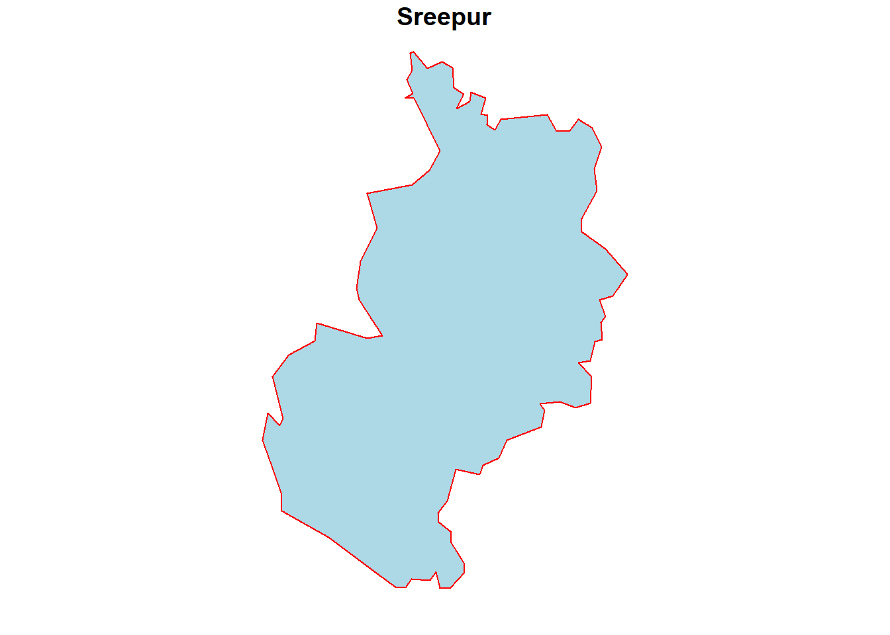
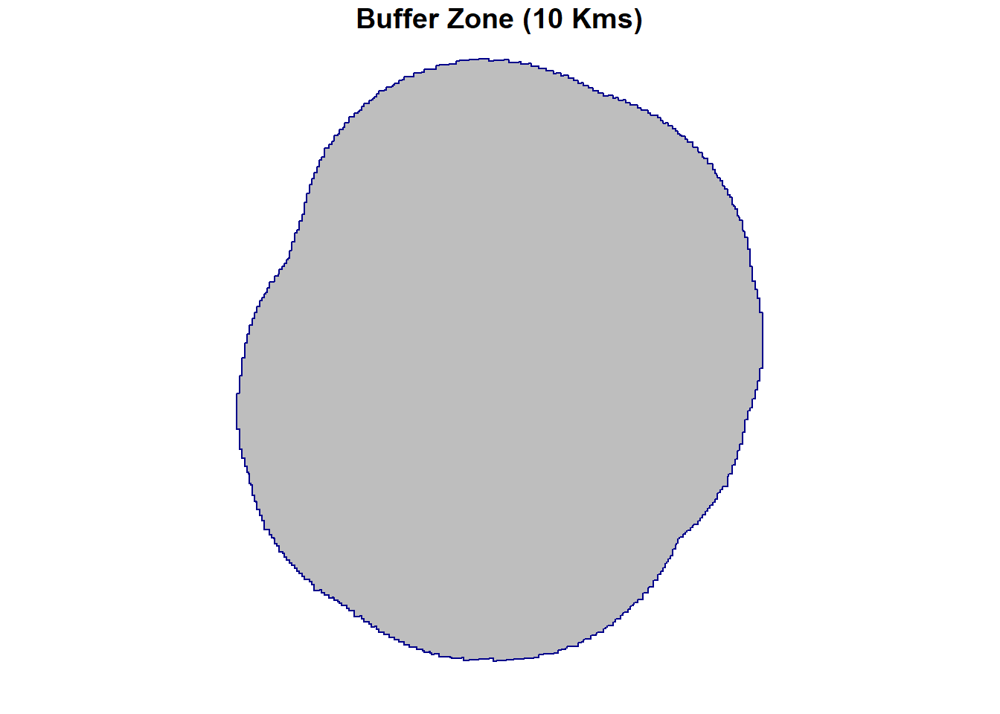
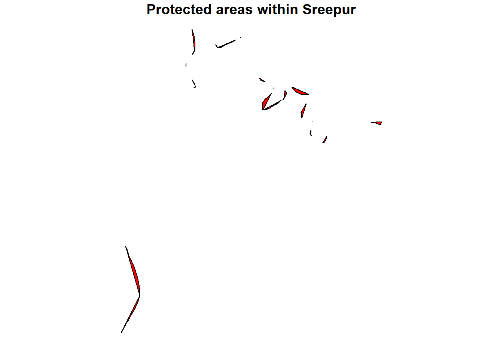
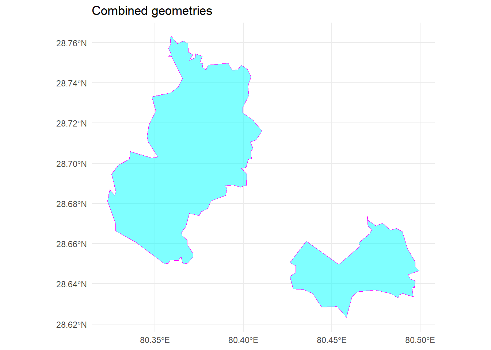
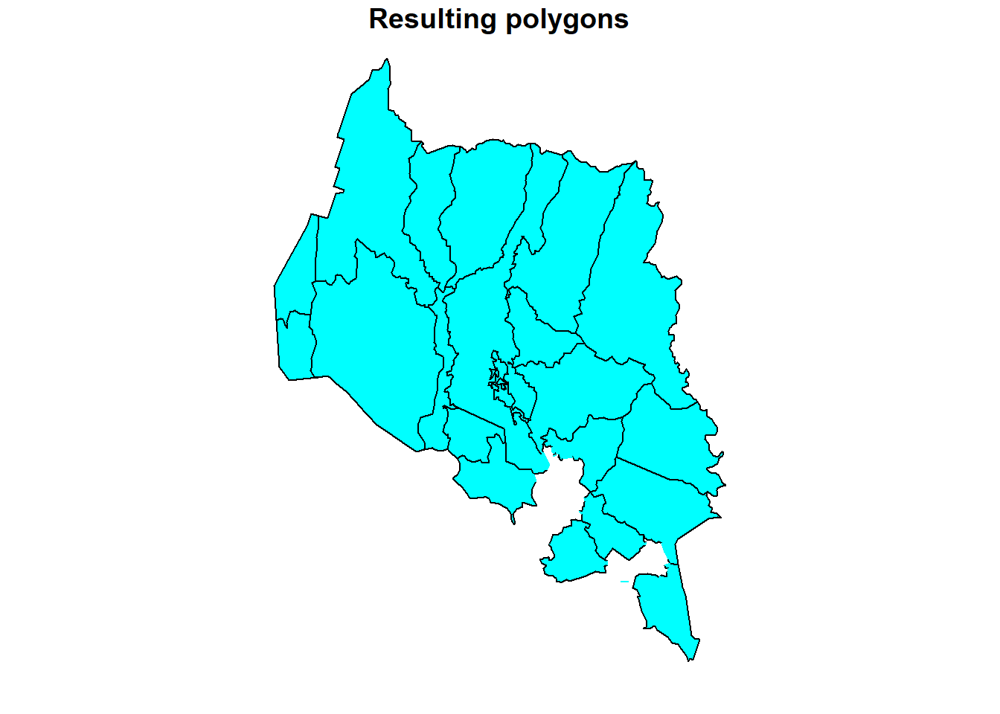
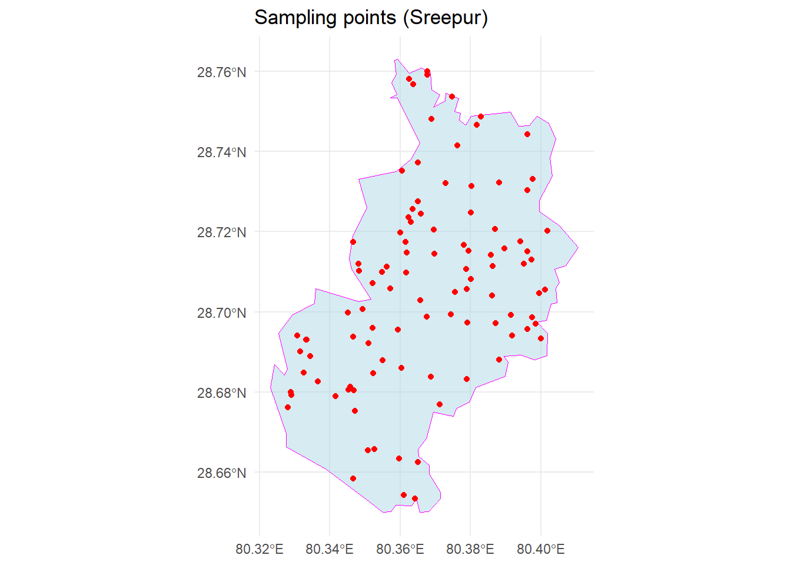

Last updated: 2024-12-27
Checks: 7 0
Knit directory: R_tutorial/
This reproducible R Markdown analysis was created with workflowr (version 1.7.1). The Checks tab describes the reproducibility checks that were applied when the results were created. The Past versions tab lists the development history.
Great! Since the R Markdown file has been committed to the Git repository, you know the exact version of the code that produced these results.
Great job! The global environment was empty. Objects defined in the global environment can affect the analysis in your R Markdown file in unknown ways. For reproduciblity it’s best to always run the code in an empty environment.
The command set.seed(20241223) was run prior to running
the code in the R Markdown file. Setting a seed ensures that any results
that rely on randomness, e.g. subsampling or permutations, are
reproducible.
Great job! Recording the operating system, R version, and package versions is critical for reproducibility.
Nice! There were no cached chunks for this analysis, so you can be confident that you successfully produced the results during this run.
Great job! Using relative paths to the files within your workflowr project makes it easier to run your code on other machines.
Great! You are using Git for version control. Tracking code development and connecting the code version to the results is critical for reproducibility.
The results in this page were generated with repository version 62e8b40. See the Past versions tab to see a history of the changes made to the R Markdown and HTML files.
Note that you need to be careful to ensure that all relevant files for
the analysis have been committed to Git prior to generating the results
(you can use wflow_publish or
wflow_git_commit). workflowr only checks the R Markdown
file, but you know if there are other scripts or data files that it
depends on. Below is the status of the Git repository when the results
were generated:
Ignored files:
Ignored: .Rhistory
Ignored: .Rproj.user/
Untracked files:
Untracked: analysis/Basic_Operations_with_Raster_Data.Rmd
Untracked: analysis/How_To.Rmd
Untracked: analysis/Resources.Rmd
Unstaged changes:
Modified: analysis/Getting_Started.Rmd
Modified: analysis/Introduction.Rmd
Modified: analysis/Loading_Geospatial_Data_in_RStudio.Rmd
Modified: analysis/Understanding_Geospatial_Data.Rmd
Modified: analysis/_site.yml
Deleted: analysis/about.Rmd
Note that any generated files, e.g. HTML, png, CSS, etc., are not included in this status report because it is ok for generated content to have uncommitted changes.
These are the previous versions of the repository in which changes were
made to the R Markdown
(analysis/Basic_Operations_with_Vector_Data.Rmd) and HTML
(docs/Basic_Operations_with_Vector_Data.html) files. If
you’ve configured a remote Git repository (see
?wflow_git_remote), click on the hyperlinks in the table
below to view the files as they were in that past version.
| File | Version | Author | Date | Message |
|---|---|---|---|---|
| Rmd | 62e8b40 | Ohm-Np | 2024-12-27 | wflow_publish("analysis/Basic_Operations_with_Vector_Data.Rmd") |
| html | 98793a8 | Ohm-Np | 2024-12-27 | Build site. |
| html | 3978bc8 | Ohm-Np | 2024-12-25 | Build site. |
| Rmd | 4c71739 | Ohm-Np | 2024-12-25 | wflow_publish("analysis/Basic_Operations_with_Vector_Data.Rmd") |
Once geospatial data is loaded into R, the next step is to explore and manipulate it to extract meaningful insights. Whether working with vector or raster data, R provides a rich set of tools for performing a variety of geospatial operations. These operations range from simple data viewing and subsetting to more complex geometric manipulations such as buffering and intersections. Mastering these fundamental tasks is crucial for conducting effective geospatial analysis.
Vector data represents features as points, lines, or polygons and includes both geometric and attribute information. As already mentioned in previous chapter we will be using the sf package since it is an excellent tool for handling vector data, as it provides a seamless way to explore, manipulate, and analyze spatial features. Vector data operations often involve viewing and subsetting attributes, performing spatial queries, and conducting geometric transformations.
After loading vector data, the first step is usually to explore its structure. The sf package allows you to inspect both the attribute table and the geometries of spatial features. You can use standard R functions like head() and summary() to view the data.
library(sf)
library(dplyr)
# Import your downloaded gpkg file
# don't forget to provide the path where you have downloaded it locally
kpr <-
read_sf("data/vector/kanchanpur.gpkg")
# View the structure of the vector data
head(kpr)Simple feature collection with 6 features and 1 field
Geometry type: MULTIPOLYGON
Dimension: XY
Bounding box: xmin: 80.06014 ymin: 28.64567 xmax: 80.55588 ymax: 29.05851
Geodetic CRS: WGS 84
# A tibble: 6 × 2
NAME geom
<chr> <MULTIPOLYGON [°]>
1 BaisiBichawa (((80.49934 28.64667, 80.49709 28.64866, 80.49709 28.65089, 80.4…
2 Beldandi (((80.25229 28.75782, 80.25377 28.7646, 80.25588 28.76808, 80.25…
3 Chandani (((80.10973 28.98432, 80.10986 28.97376, 80.10738 28.96319, 80.1…
4 Daijee (((80.34424 29.05416, 80.34449 29.04956, 80.34698 29.04397, 80.3…
5 Dekhatbhuli (((80.44701 28.78921, 80.43608 28.78623, 80.4316 28.78623, 80.42…
6 Dodhara (((80.10042 28.88838, 80.09917 28.87645, 80.10327 28.87297, 80.1…summary(kpr) NAME geom
Length:21 MULTIPOLYGON :21
Class :character epsg:4326 : 0
Mode :character +proj=long...: 0 From above, you can also see substantial difference on using head() and summary() functions.
For subsetting, logical conditions can be applied to filter features based on their attributes.
# subset polygon with Name: Sreepur
subset_data <- kpr %>%
dplyr::filter(NAME == "Sreepur")
# Lets see if the subsetting worked fine by plotting the subset data
plot(subset_data,
col = "lightblue",
border = "red",
main = "Sreepur")
| Version | Author | Date |
|---|---|---|
| 3978bc8 | Ohm-Np | 2024-12-25 |
Note: The %>% operator in dplyr is called the “pipe” operator, and it allows you to pass the output of one function directly as the input to the next function in a readable, sequential manner. It helps streamline code by eliminating the need for intermediate variables, making it easier to write and read data manipulation workflows. For example, data %>% filter(condition) %>% select(column) means “take the data, filter it based on a condition, and then select specific columns.”
Geometric operations modify the spatial geometry of vector features and are integral to spatial analysis. Two common operations are buffering and intersection.
The buffer operation creates a zone around a feature at a specified distance. It is often used for proximity analysis, such as determining areas within a certain distance of a road or river.
For this specific function, we are going to use subset polygon of Kanchanpur district (Sreepur VDC) which you can download by clicking this link.
# import your recently downloaded gpkg
spr <-
read_sf("data/vector/sreepur.gpkg")
# Create a 10000-meter buffer around our area of interest i.e. spr
buffered_data <-
sf::st_buffer(spr, dist = 10000)
# Lets see if the buffer function worked fine by plotting the buffered data
plot(buffered_data,
col = "grey",
border = "darkblue",
pch = 16,
main = "Buffer Zone (10 Kms)")
| Version | Author | Date |
|---|---|---|
| 3978bc8 | Ohm-Np | 2024-12-25 |
From the plot above, we can see that a buffer zone of 10 km around Sreepur has been successfully created. You can adjust the buffer distance and also use point or line data as needed for your task.
The intersection operation identifies the spatial overlap between two layers. It is used to find common areas or features shared by two datasets.
Here in this tutorial, we will use the data from WDPA (World Database on Protected Areas) of Nepal and see the intersection between wdpa datasets and the Sreepur VDC, if theres any. For this, please download the wdpa data by clicking on this link.
# import protected areas gpkg
wdpa <-
read_sf("data/vector/protected_areas.gpkg")
# Perform an intersection between two layers - wdpa and sreepur
intersected_data <-
sf::st_intersection(wdpa, spr)
# View the structure of the intersected data
head(intersected_data)Simple feature collection with 1 feature and 31 fields
Geometry type: MULTIPOLYGON
Dimension: XY
Bounding box: xmin: 80.34765 ymin: 28.72094 xmax: 80.38773 ymax: 28.76198
Geodetic CRS: WGS 84
# A tibble: 1 × 32
WDPAID WDPA_PID PA_DEF NAME ORIG_NAME DESIG DESIG_ENG DESIG_TYPE IUCN_CAT
<dbl> <chr> <chr> <chr> <chr> <chr> <chr> <chr> <chr>
1 555569941 555569941 1 Sukl… शुक्लाफाँटा… मध्यव… Wildlife… National VI
# ℹ 23 more variables: INT_CRIT <chr>, MARINE <chr>, REP_M_AREA <dbl>,
# GIS_M_AREA <dbl>, REP_AREA <dbl>, GIS_AREA <dbl>, NO_TAKE <chr>,
# NO_TK_AREA <dbl>, STATUS <chr>, STATUS_YR <int>, GOV_TYPE <chr>,
# OWN_TYPE <chr>, MANG_AUTH <chr>, MANG_PLAN <chr>, VERIF <chr>,
# METADATAID <int>, SUB_LOC <chr>, PARENT_ISO <chr>, ISO3 <chr>,
# SUPP_INFO <chr>, CONS_OBJ <chr>, NAME.1 <chr>, geom <MULTIPOLYGON [°]># From the head() function, it is clear that the intersection function worked fine
# Now, lets plot the intersected area
plot(intersected_data[1],
col = "red",
pch = 16,
main = "Protected areas within Sreepur")
| Version | Author | Date |
|---|---|---|
| 3978bc8 | Ohm-Np | 2024-12-25 |
Here, st_intersection() computes the geometric intersection of two spatial datasets ( spr and wdpa), retaining only the overlapping portions.
The sf package makes it easy to compute the area of spatial features within an sf object. Area computation is particularly useful for polygons, such as determining the size of administrative regions, lakes, or land parcels. The st_area() function is used to calculate the area of each geometry in an sf object. By default, the area is computed in the unit of the CRS (coordinate reference system) of the data.
# Compute the area of the intersected data of wdpa and sreepur
st_area(intersected_data)69422.06 [m^2]# Now, lets compute the area of sreepur
st_area(spr)55613977 [m^2]# Also, check the area of Kanchanpur district
st_area(kpr)Units: [m^2]
[1] 73895607 24696276 32223907 101961917 90376492 24642977 121915343
[8] 25452382 165351541 28876857 171357287 37749257 42644436 81013967
[15] 39162470 30053069 360362343 35356757 55613977 57692908 19506734# Since, there are 21 VDCs in kanchanpur district, we got the area of each polygons
# Let's compute the total area of kanchanpur district using pipeline from dplyr and sum() function
st_area(kpr) %>%
sum()1619906505 [m^2]# All the areas displayed above are in square meters, lets convert them to square kilometers
st_area(kpr) %>%
sum() %>%
as.numeric()/1e6[1] 1619.907In addition to viewing, subsetting, buffer creation, intersection, and area computation, here are other basic vector operations commonly used in geospatial analysis with R:
Combines two or more geometries into a single geometry using function st_union().
# we already have Sreepur gpkg loaded as spr, lets subset one more polygon from kanchanpur district
# subset polygon with Name: Tribhuwanbasti
subset_data <- kpr %>%
dplyr::filter(NAME == "Tribhuwanbasti")
# combine both geometries
union_data <-
st_union(subset_data, spr)
# plot the union data using library 'ggplot2'
library(ggplot2)
ggplot() +
geom_sf(data = union_data, fill = "cyan", color = "magenta", alpha = 0.5) +
theme_minimal() +
ggtitle("Combined geometries")
| Version | Author | Date |
|---|---|---|
| 3978bc8 | Ohm-Np | 2024-12-25 |
ggplot2 is a popular and powerful data visualization package in R, part of the tidyverse ecosystem. It implements the grammar of graphics, a systematic approach to building plots by layering components like data, aesthetics, geometric objects, and scales.
Key features include its flexibility to create complex, multi-layered visualizations, support for a wide range of plot types (e.g., scatter plots, bar charts, maps, and more), and its ability to handle large datasets seamlessly. The syntax is intuitive and encourages a declarative approach to visualization, where you specify what you want to see rather than how to draw it.
Computes the difference between two geometries (what’s left after subtracting one from another) using st_difference() function.
# compute the difference between original kanchanpur data and union data
diff <-
st_difference(kpr, union_data)
# Plot the geometry difference
plot(diff[1],
col = "cyan",
border = "black",
main = "Resulting polygons")
| Version | Author | Date |
|---|---|---|
| 3978bc8 | Ohm-Np | 2024-12-25 |
We can see from the plot above that, the resulting sf object after using st_difference() function excludes two polygons i.e. Sreepur and Tribhuwanbasti.
Computes the centroid (geometric center) of a geometry using st_centroid() function.
# compute the centroid of original kanchanpur data
centroids <-
st_centroid(kpr)
# View centroids
head(centroids)Simple feature collection with 6 features and 1 field
Geometry type: POINT
Dimension: XY
Bounding box: xmin: 80.0846 ymin: 28.70415 xmax: 80.48038 ymax: 28.99553
Geodetic CRS: WGS 84
# A tibble: 6 × 2
NAME geom
<chr> <POINT [°]>
1 BaisiBichawa (80.48038 28.70415)
2 Beldandi (80.27784 28.77144)
3 Chandani (80.08745 28.92563)
4 Daijee (80.29327 28.99553)
5 Dekhatbhuli (80.39995 28.81342)
6 Dodhara (80.0846 28.85747)We can see from the data above that centroids have been computed for all the polygons.
Extracts the bounding box (minimum enclosing rectangle) of a geometry using function st_bbox().
# extract the bounding box of original kanchanpur data
bbox <-
st_bbox(kpr)
# View bounding box
head(bbox) xmin ymin xmax ymax
80.06014 28.55172 80.56110 29.13732 Computes the length of lines using st_length() function or perimeters of polygons using st_perimeter() function.
# compute the perimeter of Sreepur data
perimeter <-
st_perimeter(spr)
# View perimeter
perimeter43591.21 [m]In order to compute length of the line object, we will do some workaround here.
# convert polygon to line
polygon_as_line <-
st_cast(spr, "MULTILINESTRING")
# Calculate perimeter using st_length() function
perimeter <-
st_length(polygon_as_line)
# View perimeter
perimeter43591.21 [m]Using both methods, we obtain the same result for the perimeter of the polygon. Choose the method you are most comfortable with.
Changes the Coordinate Reference System (CRS) of a spatial object. Use function st_transform().
# Our original Kanchanpur data is in WGS84
# Change CRS to NAD83
reprojected_data <-
st_transform(kpr, crs = 4269)
# Retrieve the updated CRS
st_crs(reprojected_data)Coordinate Reference System:
User input: EPSG:4269
wkt:
GEOGCRS["NAD83",
DATUM["North American Datum 1983",
ELLIPSOID["GRS 1980",6378137,298.257222101,
LENGTHUNIT["metre",1]]],
PRIMEM["Greenwich",0,
ANGLEUNIT["degree",0.0174532925199433]],
CS[ellipsoidal,2],
AXIS["geodetic latitude (Lat)",north,
ORDER[1],
ANGLEUNIT["degree",0.0174532925199433]],
AXIS["geodetic longitude (Lon)",east,
ORDER[2],
ANGLEUNIT["degree",0.0174532925199433]],
USAGE[
SCOPE["Geodesy."],
AREA["North America - onshore and offshore: Canada - Alberta; British Columbia; Manitoba; New Brunswick; Newfoundland and Labrador; Northwest Territories; Nova Scotia; Nunavut; Ontario; Prince Edward Island; Quebec; Saskatchewan; Yukon. Puerto Rico. United States (USA) - Alabama; Alaska; Arizona; Arkansas; California; Colorado; Connecticut; Delaware; Florida; Georgia; Hawaii; Idaho; Illinois; Indiana; Iowa; Kansas; Kentucky; Louisiana; Maine; Maryland; Massachusetts; Michigan; Minnesota; Mississippi; Missouri; Montana; Nebraska; Nevada; New Hampshire; New Jersey; New Mexico; New York; North Carolina; North Dakota; Ohio; Oklahoma; Oregon; Pennsylvania; Rhode Island; South Carolina; South Dakota; Tennessee; Texas; Utah; Vermont; Virginia; Washington; West Virginia; Wisconsin; Wyoming. US Virgin Islands. British Virgin Islands."],
BBOX[14.92,167.65,86.45,-40.73]],
ID["EPSG",4269]]Measures the distance between geometries.
# compute distance between sreepur and Tribhuwanbasti polygon
distances <-
st_distance(spr, subset_data)
# View distance
distancesUnits: [m]
[,1]
[1,] 4522.424So, the distance between sreepur and Tribhuwanbasti is ~4523 meters.
Generates random or regular points within a geometry.
# Generate 100 sampling points within Sreepur polygon
sampled_points <-
st_sample(spr, size = 100, type = "random")
# Plot the sampled points within sreepur
ggplot() +
geom_sf(data = spr, fill = "lightblue", color = "magenta", alpha = 0.5) +
geom_sf(data = sampled_points, color = "red", pch = 16) +
theme_minimal() +
ggtitle("Sampling points (Sreepur)")
| Version | Author | Date |
|---|---|---|
| 3978bc8 | Ohm-Np | 2024-12-25 |
To save vector data to a file in R using the sf package, we can use the st_write() function. This function allows us to write spatial data to various formats, including Shapefile, GeoPackage, GeoJSON, and more.
Exporting data every time I knit the R Markdown document is tiresome. Therefore, please remember to remove the # from the script section and provide the absolute path where you want to export/save the sf object. Here’s a basic example of how to save vector data:
# Assuming 'vector_data' is your sf object (e.g., a shapefile, GeoJSON, etc.)
# Save to a shapefile
# st_write(vector_data, "path/to/output_file.shp")
# Save to a GeoPackage
# st_write(vector_data, "path/to/output_file.gpkg")
# Save to a GeoJSON file
# st_write(vector_data, "path/to/output_file.geojson")For this tutorial, this concludes the coverage of vector data operations. If you would like to explore additional operations, examples, or need clarification on any of the steps covered, please visit the GitHub repository: R_tutorial and feel free to open an issue.
sessionInfo()R version 4.4.0 (2024-04-24 ucrt)
Platform: x86_64-w64-mingw32/x64
Running under: Windows 11 x64 (build 22631)
Matrix products: default
locale:
[1] LC_COLLATE=English_Germany.utf8 LC_CTYPE=English_Germany.utf8
[3] LC_MONETARY=English_Germany.utf8 LC_NUMERIC=C
[5] LC_TIME=English_Germany.utf8
time zone: Europe/Berlin
tzcode source: internal
attached base packages:
[1] stats graphics grDevices utils datasets methods base
other attached packages:
[1] ggplot2_3.5.1 dplyr_1.1.4 sf_1.0-19 workflowr_1.7.1
loaded via a namespace (and not attached):
[1] s2_1.1.7 sass_0.4.9 utf8_1.2.4 generics_0.1.3
[5] lwgeom_0.2-14 class_7.3-22 KernSmooth_2.23-22 stringi_1.8.4
[9] digest_0.6.36 magrittr_2.0.3 evaluate_0.24.0 grid_4.4.0
[13] fastmap_1.2.0 rprojroot_2.0.4 jsonlite_1.8.8 processx_3.8.4
[17] whisker_0.4.1 e1071_1.7-16 DBI_1.2.3 ps_1.8.1
[21] promises_1.3.0 httr_1.4.7 fansi_1.0.6 scales_1.3.0
[25] jquerylib_0.1.4 cli_3.6.3 rlang_1.1.4 units_0.8-5
[29] munsell_0.5.1 withr_3.0.2 cachem_1.1.0 yaml_2.3.10
[33] tools_4.4.0 colorspace_2.1-1 httpuv_1.6.15 vctrs_0.6.5
[37] R6_2.5.1 proxy_0.4-27 lifecycle_1.0.4 classInt_0.4-10
[41] git2r_0.33.0 stringr_1.5.1 fs_1.6.4 pkgconfig_2.0.3
[45] callr_3.7.6 gtable_0.3.5 pillar_1.9.0 bslib_0.8.0
[49] later_1.3.2 glue_1.7.0 Rcpp_1.0.13 xfun_0.47
[53] tibble_3.2.1 tidyselect_1.2.1 highr_0.11 rstudioapi_0.16.0
[57] knitr_1.48 farver_2.1.2 htmltools_0.5.8.1 rmarkdown_2.28
[61] wk_0.9.4 compiler_4.4.0 getPass_0.2-4